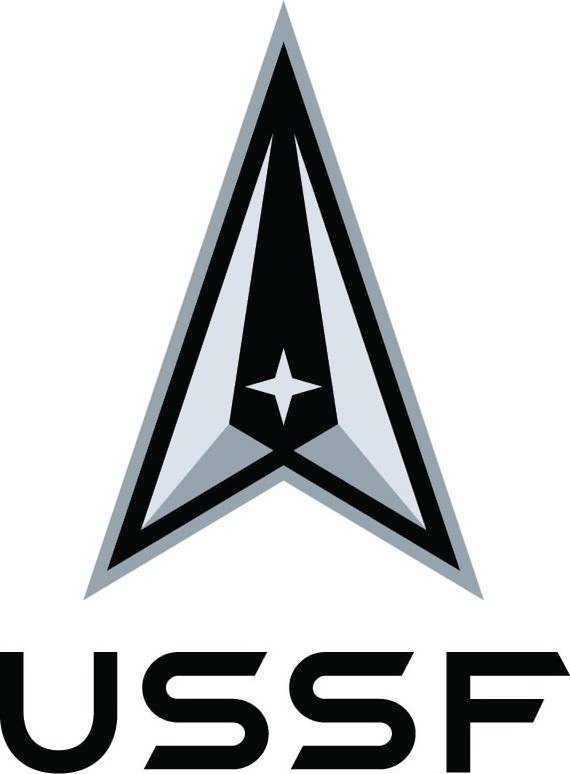
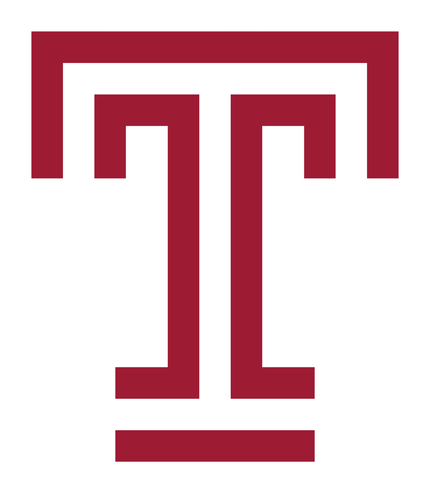
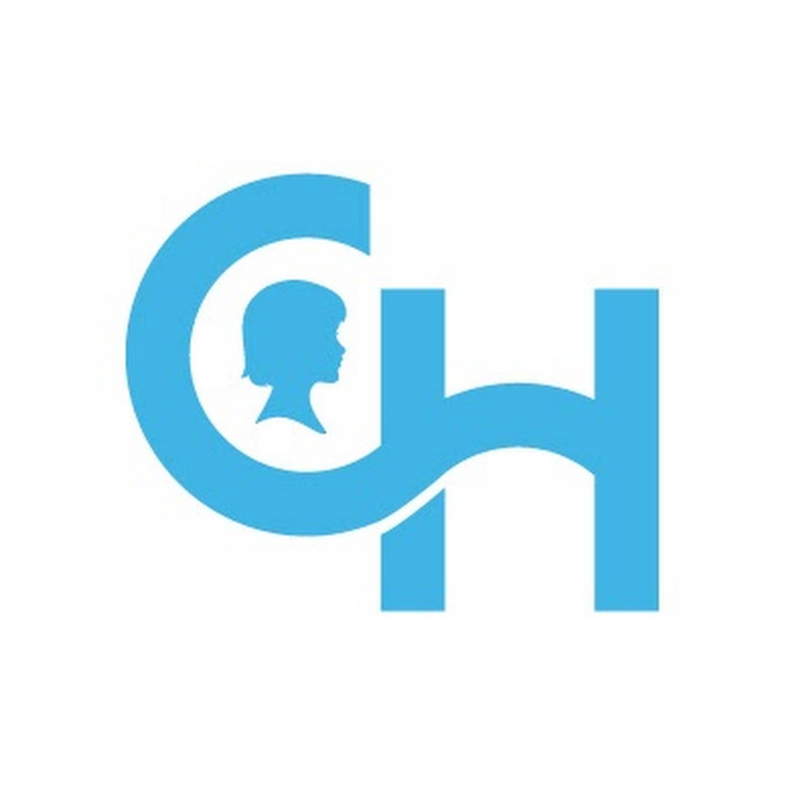
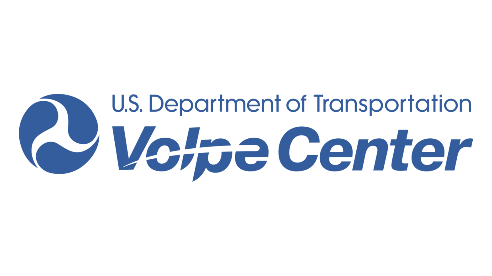

Skynet
A prototype computer vision sofware for basic object detection. This software is a client side application written in pure python using the base ananconda libraries. This program leverages a hueristically designed multi-layer perception with a configurable convolutional option.
Overpass
A software widget that integrated open street maps and other database queryies for a node based distance calculation. This software is a client side set of scritps written in prue python and leverages the OSM api.
Bespin AKA ARGUS
Machin Learning and Computer vision for satellitte imager y analysis tool kit. This cloud native set of sotware scripts allows an imagery analysist to query various databases, create and annotate data sets, modify and train various data sets on U-net algorithm.
Plasma
Matlab tool box for image scientist. This allows users to configure various types of imagry sensors and preform a collection analyis on variable constraints.
Data Slate
Web application for assay table data capture.
CMPT - CMPT-Generator
Python software for imagery analysis on specific space sensors
Avro Deserializer
Software widget that allows user to deserialize files in the avro format.
Smart Home Controller
Android OS Phone aplication that detects user gestures with the camera.
Pythonic Automous NIIRS Estimation (PANE)
Set of python scripts for imagery analyist to preform NIIRS scale estimation on satellit imagery.
Weaklink.AI
Web application that aggragates real time stock market information and identifies market movers with variable categories.
CARMA Autonomous driving stack
CARMA is a reusable, extensible platform for controlling SAE level 2 connected, automated vehicles (AVs). It provides a rich, generic API for third party plugins that implement vehicle guidance algorithms to plan vehicle trajectories. It is written in C++ and runs in a Robot Operating System (ROS) environment on Ubuntu. The platform can be reused on a variety of properly equipped vehicles. Migration has begun from the ROS 1 framework to ROS 2.
IT Services
System administration. Server configuration and maintence. Hardware stand up, procurement and inventory managemnt.
SETA Support
System Engineering Technical Advisor
Other Expertise
I&Q wave data acquisition system
Canbus data acquisition
Semi-active suspension system
Electromyography data aggregator
NRO
USSF
University of Illinois at Chicago
Temple University
Drexel University
Children’s Hospital of Philadelphia
Ruggiero Plante Land Design
Volpe Transportation Center

Civil Air Patrol
Mike Salzarulo
Founder